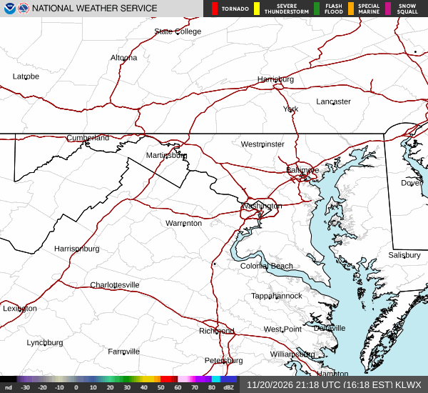

Fredericksburg stays cloudy near 54 this afternoon before rain arrives tonight, builds into a wet, windy Thanksgiving Day near 61 with a slight thunderstorm chance and gusts to 51 mph, tapers Thursday night, then turns drier and breezier Friday near 56 before clearing Friday night near 39
The National Weather Service's Wind Advisory for the Fredericksburg region now runs from 1 a.m. to 4 p.m. EST Thursday — Thanksgiving Day itself — about three hours longer than this morning's read, for northeast winds of 20 to 30 mph with gusts around 55 mph. This afternoon stays cloudy and seasonably cool near 54, then rain moves in after 7 p.m. tonight with a 100 percent chance of precipitation and three-quarters to one inch of rain by morning. Thanksgiving Day itself has warmed slightly to a high near 61 (up from this morning's 59-degree read) and now carries a slight chance of thunder on top of the still-100-percent rain chance, with 2 to 3 inches of additional rainfall and gusts up to 51 mph — the wettest, windiest day of the stretch. Thursday night tapers to a 40 percent chance of lingering light rain and patchy fog near 45, and Friday turns drier and breezier, with a high near 56 under partly sunny skies, before Friday night clears to partly cloudy near 39.
- The Wind Advisory now runs through 4 p.m. Thursday — plan on gusty conditions for any afternoon travel home from Thanksgiving dinner, not just the morning.
- Heavy rain arrives tonight after 7 p.m. and continues into Thursday — get any turkey-fryer setup, outdoor seating or decorations under cover before dark tonight.
- A slight thunderstorm chance is now mixed into Thursday's rain — keep devices charged and a flashlight handy in case gusts to 51 mph cause flickers or outages.
- If you're driving to Thanksgiving dinner Thursday, build in extra time for wind and standing water on the roads through the afternoon, not just the morning commute.